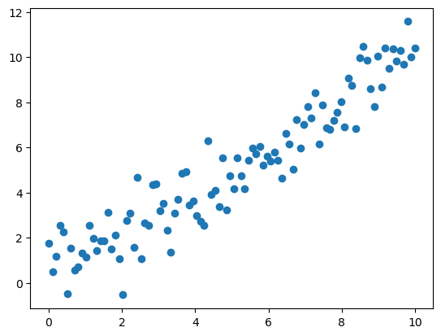
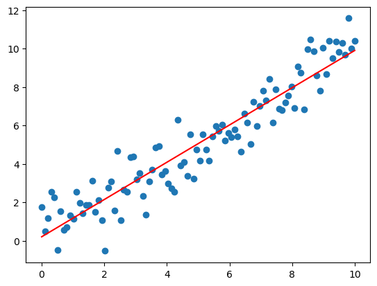
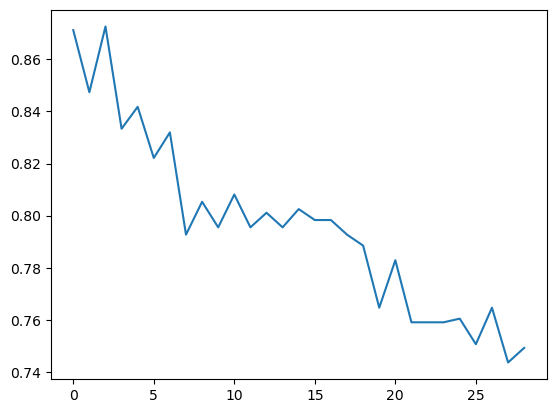

Sklearn : Ensemble Learning
Dans ce chapitre, nous allons explorer les bases de l'apprentissage supervisé avec Sklearn, en abordant les concepts de régression, de classification, et de prédiction à travers des exemples concrets. Nous terminerons par un exercice pour affiner nos compétences en paramétrage de modèles.
Sommaire :
- Chapitre 1 : Régression
- Chapitire 2 : Classification
- Chapitre 3 : Prediction de survie
- Chapitre 4 : Exercice et Solution
import numpy as np
import matplotlib.pyplot as plt
import seaborn as sns
1. Régression
np.random.seed(0)
m = 100 # creation de 100 échantillons
X = np.linspace(0, 10, m).reshape(m,1)
y = X + np.random.randn(m, 1)
plt.scatter(X, y)

from sklearn.linear_model import LinearRegression
model = LinearRegression()
model.fit(X, y) # entrainement du modele
model.score(X, y) # évaluation avec le coefficient de corrélation
-
0.8881140743377214
plt.scatter(X, y)
plt.plot(X, model.predict(X), c='red')

2. Classification
titanic = sns.load_dataset('titanic')
titanic = titanic[['survived', 'pclass', 'sex', 'age']]
titanic.dropna(axis=0, inplace=True)
titanic['sex'].replace(['male', 'female'], [0, 1], inplace=True)
titanic.head()
-
survived pclass sex age
0 0 3 0 22.0
1 1 1 1 38.0
2 1 3 1 26.0
3 1 1 1 35.0
4 0 3 0 35.0
from sklearn.neighbors import KNeighborsClassifier
model = KNeighborsClassifier()
y = titanic['survived']
X = titanic.drop('survived', axis=1)
model.fit(X, y) # entrainement du modele
model.score(X, y) # évaluation
-
0.8417366946778712
3. Prediction de survie
def survie(model, pclass=3, sex=0, age=26):
x = np.array([pclass, sex, age]).reshape(1, 3)
print(model.predict(x))
print(model.predict_proba(x))
survie(model)
-
[0]
[[0.8 0.2]]
4. Exercice et Solution
Écrire un code qui permet de trouver la meilleure valeur de voisin n_neighbors pour le modele de KNeighborsClassifier.
Dans sklearn, il est possible de faire cela avec la classe GridSearchCV. Mais il peut également etre utile de savoir écrire soi-meme ce genre de code de recherche.
💡 Cliquez ici pour voir la solution
SOLUTION
score = []
best_k = 1
best_score = 0
for k in range(best_k, 30):
model = KNeighborsClassifier(n_neighbors=k)
model.fit(X, y)
score.append(model.score(X, y))
if best_score < model.score(X, y):
best_k = k
best_score = model.score(X, y)
print(best_k)
plt.plot(score)
-
3
